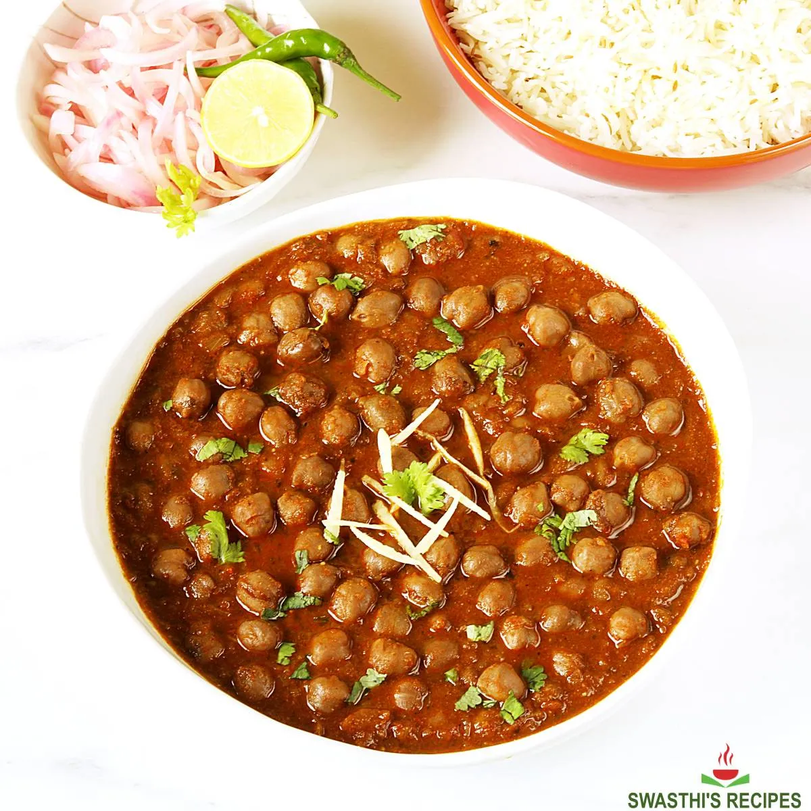

Chola Recipe

Description
Chole Masala is a popular Punjabi dish where chickpeas are simmered in a spicy & tangy gravy. "Chole" is a Punjabi word for "chickpeas" and "masala" is a word for "spices". So this dish is nothing but chickpeas cooked to perfection with various spices, onions, tomatoes and herbs
Chickpea is a legume that is relished all over India. While the term Chole is specifically used to mention the Punjabi dish, Chana masala is a more generic word used to mention any spiced Indian Chickpea Curry. So Chole Masala is a Punjabi preparation and Chana Masala or a simple Indian Chickpea Curry is not necessarily Punjabi and is made in numerous ways across India.
Ingredients
- 1 Onion, Chopped
- 1 Tomato, Chopped
- 1 (1 inch) piece fresh ginger, peeled and chopped
- 4 cloves garlic, chopped, or more to taste
- 1 green chile pepper, seeded and chopped
- 3 tablespoons olive oil
- 2 fresh bay leaves
- 1 teaspoon chili powder
- 1 teaspoon coriander powder
- 1 teaspoon garam masala
- ½ teaspoon turmeric powder
- 1 pinch salt to taste
- water as needed
- 1 (15 ounce) can chickpeas
- 1 teaspoon fresh cilantro leaves, for garnish, or more to taste
Steps
- Grind onion, tomato, ginger, garlic, and chile pepper together in a food processor into a paste.
- Heat olive oil in a large skillet over medium heat. Fry bay leaves in hot oil until fragrant, about 30 seconds. Pour the paste into the skillet and cook until the oil begins to separate from the mixture and is golden brown in color, 2 to 3 minutes. Season the mixture with chili powder, coriander, gram masala, turmeric, and salt; cook and stir until very hot, 2 to 3 minutes.
- Stir enough water into the mixture to get a thick gravy; bring to a boil and stir chickpeas into the gravy. Reduce heat to medium and cook until the chickpeas are heated through, 5 to 7 minutes. Garnish with cilantro.